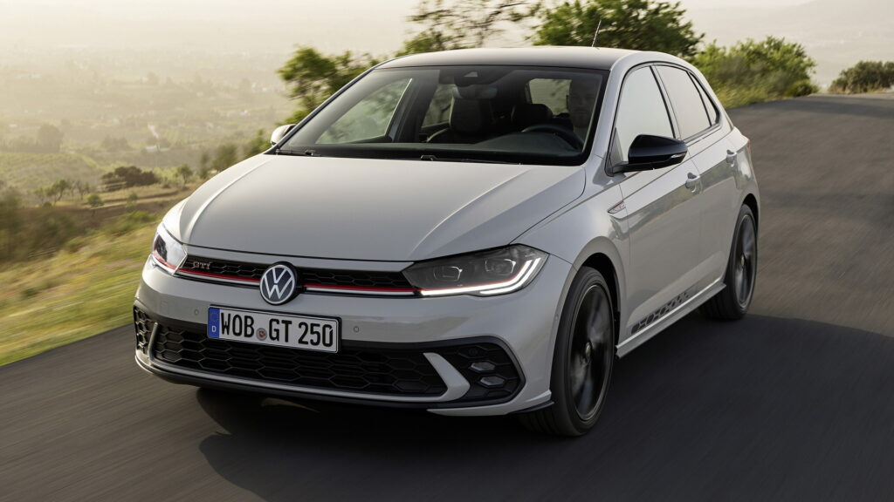
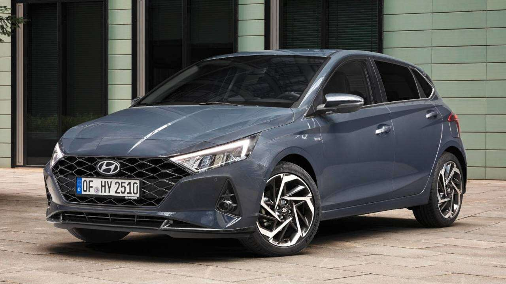
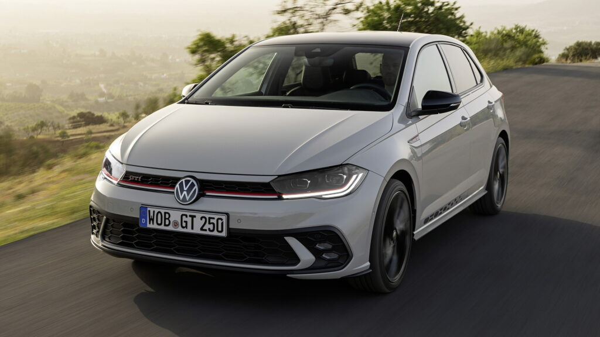
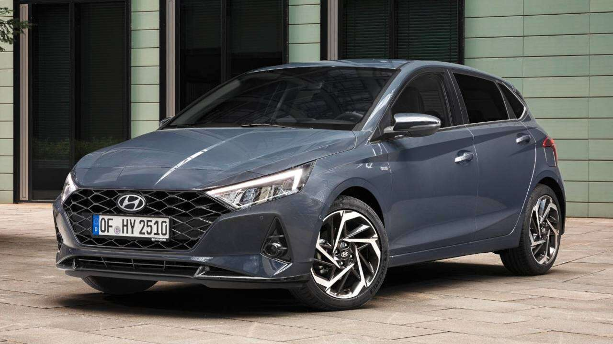

POLO
- The Volkswagen Polo is a supermini car (B-segment) produced by the German car manufacturer Volkswagen since 1975.
- It is sold in Europe and other markets worldwide in hatchback, saloon, and estate variants throughout its production run.
- Some generations were facelifted midway through production, with the updated versions known unofficially by an addition of the letter F to the mark number, e.g., Mk2F.
- Some members of the automotive press and some enthusiasts consider the facelifts to be separate models, so have used the unofficial designations Polo Mk1 to Mk7 for previous generations.
- Each Polo model is also identified by a two- or three-character Volkswagen Group Typ number.
- Official VW Polo history describes Mark I to Mark IV using either Roman numerals[1] or Arabic numerals, with facelifted variants known as "Phase II" models
- The body style has been varied through the life of the car, originally as a hatchback, which derived from the Audi 50.
- Starting in 1982, Volkswagen sold the Polo in Japan initially through an agreement with Japanese dealership Yanase that specializes in European and North American vehicles. Of all Volkswagens imported into Japan,
- only the Polo (until 2017) and the Golf (until 1997), complied with Japanese government dimension regulations until the introduction of the VW Up! in 2012.
Summary
- Three-door hatchback (Mk1 to Mk5) – the Mk2 and Mk2F were available in two separate three-door hatchback styles, one of which was badged as a coupé.
- Two-door saloon (Mk1, Mk1F, Mk2, Mk2F)
- Early versions used a four-speed manual transmission, whilst the current car is available with either six-speed manual or seven-speed automatic transmission.
- The suspension system on all models uses a fully independent MacPherson strut front suspension, and a twist-beam rear suspension.
Most models use disc brakes at the front and rear drum brakes, although some recent models have all-round disc brakes.
.jpeg) 


